Kaiju は、ブラシで絵を描くためのペイントソフトです。画面はできるだけ何も置かず、必要なときだけパネルを出す作りになっています。Windows と、iPad(ブラウザ)で使えます。
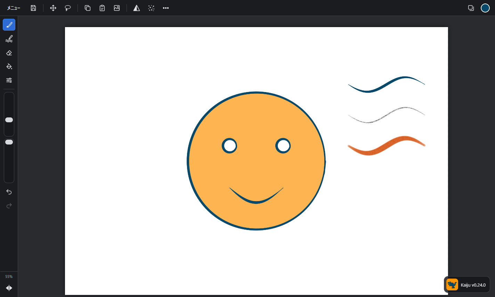
| 場所 | あるもの |
|---|---|
| トップバー(上)の左 | メニュー、保存、移動・変形、選択、コピー、ペースト、キャンバスのコピー、シャープ、ノイズ、そのほかの機能(…) |
| トップバーの右 | レイヤー、色(丸) |
| サイドバー(左の端のバー) | 上から、ブラシ・模様ペン・消しゴム・バケツ、色相・彩度・明るさ、ブラシのサイズ、不透明度、元に戻す、やり直し、キャンバスの拡大率(%)、左右反転の表示 |
| まん中 | キャンバス |
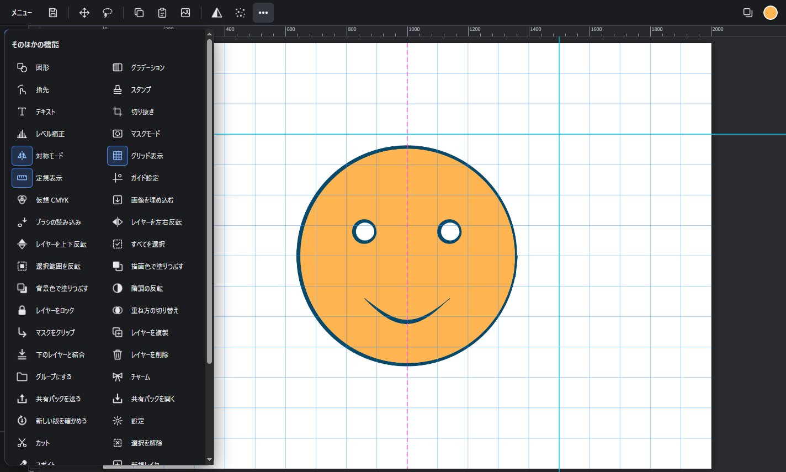
ペンタブレットや Apple Pencil では、筆圧で線の太さや濃さが変わります。マウスや指には筆圧がないので、かわりに動かす速さで太さが変わります(ゆっくり = 太い、速い = 細い)。
(登録のボタンを出す長押しは、少し長めです(約 0.7 秒)。好きな大きさに合わせている最中に、出てしまわないようにしています。)
よく使うサイズは、バーに目盛りとして残せます。
解除するときは、その大きさに合わせて(ぴたっと止めて)長押しし、「登録を解除」を押します。目盛りはブラシごとに覚えています。
拾うのをやめるときは、ブラシのボタンをもう一度押します。
ブラシのウィンドウの上の帯にも、スポイトのボタンがあります(「＋ 新しいブラシ」のすぐ左)。押すと、同じようにスポイトになります。
長押しでスポイトにしたくないときは、設定の「ブラシのボタンの長押しで、スポイトにする」のチェックを外します(外すと、長押しはブラシの一覧になります)。
キーボードがあるときは、ブラシを使っている最中に Alt を押している間もスポイトになります。
キャンバスの長押しでも、色を拾えます(ブラシ・模様ペンのとき。「指で描く」をオフにしていても、指の長押しで拾えます)。ペンや指で絵を押したまま、動かさずに少し待つ(約 0.5 秒)と、輪が出て、その場所の色になります。そのまま動かすと、動かした先の色に変わります。離すと、ブラシのまま続けて描けます。使わないときは、設定の「キャンバスの長押しで、スポイトにする」のチェックを外します。
そのほかの機能 → 対称モードを押すと、キャンバスのまん中を軸にして、映した所にも同時に描けます。押すたびに、左右 → 上下 → 4方向 → なし と切り替わります。軸は、ピンクの点線で出ます。ブラシと消しゴムに効きます。
そのほかの機能 → 図形(キーボードは U)を選んで、キャンバスをなぞると、描画色で図形が描けます。
そのほかの機能 → グラデーションを選んで、押した所から離した所へなぞると、色がなめらかに変わる塗りになります。今のレイヤーの全体(選択範囲があれば、その中)に塗ります。
そのほかの機能 → 指先を選んでなぞると、なぞった向きに絵がのびます(色をなじませる・ぼかす)。大きさと硬さは、ブラシで選んでいるブラシのもの(左のバー)です。もう一度押すと、強さを変えられます。
色の上に模様を描くためのツールです。サイドバーの、ブラシのすぐ下(ペンと波線の絵)にあります。 1本の線が、いくつかの色の上を通ると、通った所ごとに線の色が変わります。
選んでいる状態でもう一度押すと、設定が出ます。
| 設定 | 意味 |
|---|---|
| 線の色:下の色を暗く / 明るく(はじめ) | 下の色を少し暗くした色で描きます。青の上では暗い青、緑の上では暗い緑になります。今の色(描画色)は使いません |
| 線の色:明るさだけ合わせる | 今の色の色み(赤っぽい・青っぽい、あざやかさ)のまま、明るさだけが下の色と同じになります |
| 明るさの差 | 「下の色を暗く / 明るく」のとき、どれだけ変えるか。左へ動かすと暗く、右へ動かすと明るくなります(はじめは 15% 暗く) |
| 何も描いていない所には描かない(はじめはオン) | 絵のある所の上にだけ、線が出ます。色の外へはみ出しても、何もない所には付きません。外すと、何もない所は白い紙として描きます(「下の色を暗く」なら、うすい灰色) |
絵のほかの所を、写して描くツールです。
文字は、新しいレイヤーになります(一覧の名前に Ｔ が付きます)。位置や大きさは、移動・変形のツールで変えられます。テキストのレイヤーを選んだままテキストツールで押すと、打ち直せます(打ち直すと、そのレイヤーに描き足した絵や、変形は消えます)。
線を引いたあと、Shift を押しながら別の所をクリックすると、前の線の終わりからそこまで、まっすぐな線が引けます。
サイドバーのブラシを、選んでいる状態でもう一度押すと、ブラシのパネルが出ます。
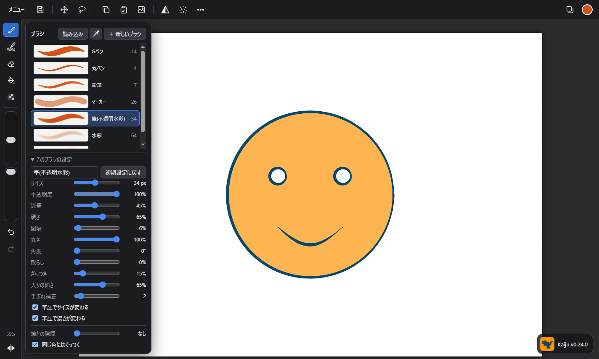
一覧から押すだけです。左の絵は、そのブラシで引いた線の見本です。
| ブラシ | どんな線か |
|---|---|
| Gペン | くっきりした線。筆圧で太さが大きく変わる(線画向き) |
| 丸ペン | 細くて固い線 |
| 鉛筆 | 紙のざらつきが出る線(下書き向き) |
| マーカー | 太さが変わらない、半透明の線 |
| 筆(不透明水彩) | やわらかいふちの、こってりした塗り |
| 水彩 | うすく重なる、ふわっとした塗り |
| エアブラシ | 広くぼかして吹きつける(グラデーション・ほお紅) |
消しゴムを長押しする(または選んでいる状態でもう一度押す)と、消しゴムの一覧(硬め・やわらかめ)になります。
| 設定 | 意味 |
|---|---|
| サイズ | 線の太さ |
| 不透明度 | 1本の線の濃さの上限。同じ線の中で重ねても、これより濃くなりません |
| 流量 | 重ねるほど濃くなる速さ。小さいと、少しずつ色が乗ります |
| 硬さ | ふちのくっきりさ。小さいほど、ふわっとぼけます |
| 間隔 | 丸い判を押す間隔。大きくすると点々の線になります |
| 丸さ | 小さくすると、平たい筆になります |
| 角度 | 平たい筆の向き |
| 散らし | 判をばらまきます(スプレー・葉っぱ・草のような線) |
| ざらつき | 紙の目(鉛筆・パステルのような線) |
| 入りの細さ | 筆圧が弱いときに、どこまで細くなるか |
| 手ぶれ補正 | 大きいほど線がなめらかになります(少し遅れてついてきます。0〜20)。全体の効き方は、設定の「手ぶれ補正の強さ」で、まとめて強く・弱くできます |
| 筆圧でサイズが変わる | 外すと、いつも同じ太さになります |
| 筆圧で濃さが変わる | 筆圧が弱いと、うすくなります |
自分で作ったブラシは削除できます。はじめからあるブラシは、設定を変えても初期設定に戻すでいつでも元に戻せます。
作ったブラシと変えた設定は、この端末に覚えているので、次に開いたときもそのままです(Windows と iPad では、別々に覚えます)。
ブラシのパネルの読み込み(または、そのほかの機能 → ブラシの読み込み)で、ブラシを足せます。
| 読み込めるもの | どうなるか |
|---|---|
| Photoshop のブラシ(.abr) | 中に入っている形が、1つずつブラシになります(1回に 40 個まで) |
| 画像(PNG・JPEG など) | 暗い所ほど濃い形のブラシになります。白い紙に黒で描いた絵を、そのままブラシの形にできます |
パネルのいちばん下にあります。すでにある線から、決めた距離以内には色が乗らなくなる設定です(0〜100px)。
たとえば 20px にして、線の上からざっと塗ると、線のまわり 20px だけ塗り残されて、線と塗りのあいだに帯のような隙間ができます。
サイドバーのバケツを選んで、塗りたい所を押します。見えている絵(線)を境目にして、今のレイヤーに色が入ります(境目にする絵は、設定で「今のレイヤーだけ」にもできます)。
線画のレイヤーの下に新しいレイヤーを作って、そこに塗るのがおすすめです。線がきれいに残ります。
バケツを長押しする(または選んでいる状態でもう一度押す)と、設定が出ます。
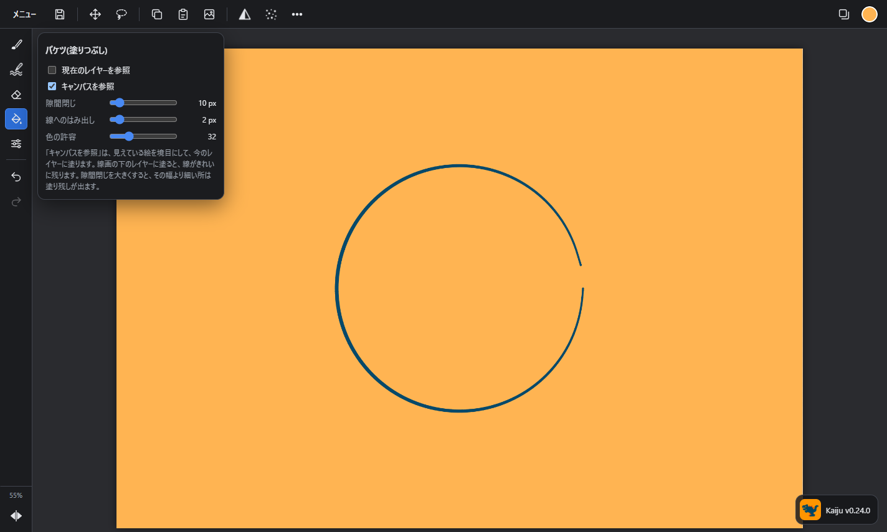
| 設定 | 意味 |
|---|---|
| 現在のレイヤーを参照 / キャンバスを参照 | 境目にする絵を選びます(どちらか1つ)。キャンバスを参照(はじめ)は、見えている絵ぜんぶ。線画が別のレイヤーにあっても、その線で止まります。現在のレイヤーを参照は、今のレイヤーの絵だけ。ほかのレイヤーの線は、ないものとして塗ります |
| 隙間閉じ | 線が完全にくっついていなくても塗れるようにします。線の切れ目が、ここで決めた幅より狭ければ、そこから外へもれません(0 = なし 〜 100px) |
| 線へのはみ出し | 塗る範囲をこの分だけ広げて、線の下にもぐらせます。線と塗りのあいだに白いすき間が残りません(0〜20px) |
| 色の許容 | 大きいほど、似た色まで広く塗ります |
コツ:
右上の四角が重なったボタンで、レイヤーのパネルが出ます。上にあるものほど、手前に表示されます。
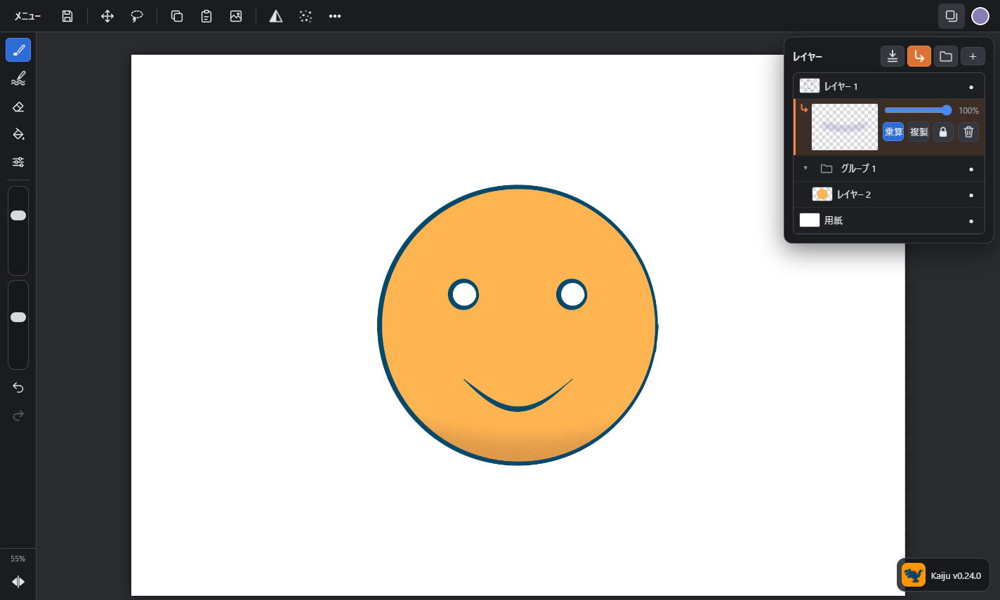
| 操作 | やり方 |
|---|---|
| レイヤーを選ぶ | 一覧で押す |
| 新しいレイヤー | 右上の**＋**(今のレイヤーのすぐ上にできます。クリップしているレイヤーの間に作ると、新しいレイヤーもクリップされます) |
| 順番を変える | レイヤーを持って動かす(青い線の所に入ります)。指のときは、少し押してから動かします(すぐ動かすと、一覧のスクロールになります) |
| まとめて選ぶ | 右はしの ● の列を、上下になぞる。キーボードがあるときは、Shift か Ctrl を押しながら押す |
| 表示 / 非表示 | 右はしの ● を押す |
| 名前を変える | 一覧で、すばやく2回押す |
| 重ね方(合成モード) | 左下の通常のボタン。押すたびに、通常 ⇄ 乗算 が切り替わります(ボタンには、今の重ね方が出ます)。ほかのものは設定で出せます |
| 不透明度 | ボタンの横のバー |
| マスクをクリップ | 上の帯の、下向きの矢印のボタン(レイヤーを左にスライドして出る矢印でも) |
| 複製・結合・消去 | 下のボタン |
| 削除 | 下の右はしのボタン |
| 下のレイヤーと1枚にする | 結合 |
まとめて選んでいるときは、「グループ」「削除」と、持って動かす並べ替えが、選んだ全部に効きます。
下のロックを押すと、そのレイヤーには、描く・動かす・消す・結合・削除ができなくなります(一覧の名前に 🔒 が付きます)。もう一度押すと、解除します。
そのほかの機能 → レイヤーを左右反転 / 上下反転で、今のレイヤー(選択範囲があれば、その中)の絵そのものを反転します。見た目だけを反転したいときは、サイドバーのいちばん下の ◀▶ を使います。
メニュー → 画像を埋め込む(または、そのほかの機能)で、画像のファイルを、新しいレイヤーとして置けます。キャンバスより大きい画像は、収まるように小さくして、まん中に置きます。置いたあとは、移動・変形のツールになるので、位置と大きさを決めます。
ブラシ・バケツ・レイヤー・色・色相彩度明るさ・シャープ・ノイズのウィンドウは、どれも次の3つの出し方ができます。
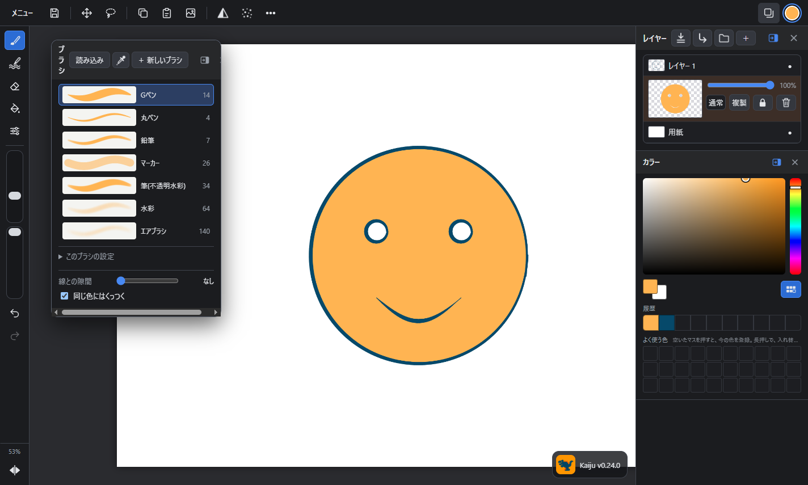
| 出し方 | どうなるか | やり方 |
|---|---|---|
| ふつう | ボタンを押すと出て、外を押すと閉じます | (はじめの状態) |
| 小窓 | 画面の中で独立したウィンドウになり、外を押しても閉じません。好きな所に置けます | 出ているウィンドウの上の帯(名前のある所)を持って、動かします。動かしたその場で小窓になって、ついてきます(ウィンドウを長押ししても、小窓になります) |
| 右に固める | 右の端に、縦に並びます。キャンバスはその分せまくなります | 小窓の上の帯の、右に固めるボタンを押します |
上の画像は、ブラシを小窓に、レイヤーと色を右に固めたところです。
マスクをクリップにチェックを入れると、そのレイヤーは、すぐ下のレイヤーに絵がある所にだけ表示されます。はみ出さずに影や模様を入れるのに使います。クリップしているレイヤーは、一覧の左に下向きの矢印とオレンジの線が付きます。チェックは、不透明度のバーの右にあります。
クリップしているレイヤーと、その土台のレイヤーの間に新しいレイヤーを作る(またはペーストする)と、新しいレイヤーも同じようにクリップされます(クリップしているレイヤーが1枚ふえます)。上のレイヤーのクリップ先が、途中で変わってしまうことはありません。
いくつかのレイヤーを、ひとまとめにできます。
グループを選ぶと、グループ全体の不透明度・重ね方・表示を変えられます。グループの中に、さらにグループは作れません(1段だけです)。
グループにもマスクをクリップできます。 グループのすぐ上のレイヤーで「マスクをクリップ」にチェックを入れると、グループの中の絵ぜんぶを合わせた形に、はみ出さずに描けます。上の画像では、色のグループに、乗算の影のレイヤーをクリップしています。
次のものは、設定でチェックを入れると、レイヤーのパネルに出ます。
右上の丸いボタンで、色のパネルが出ます。
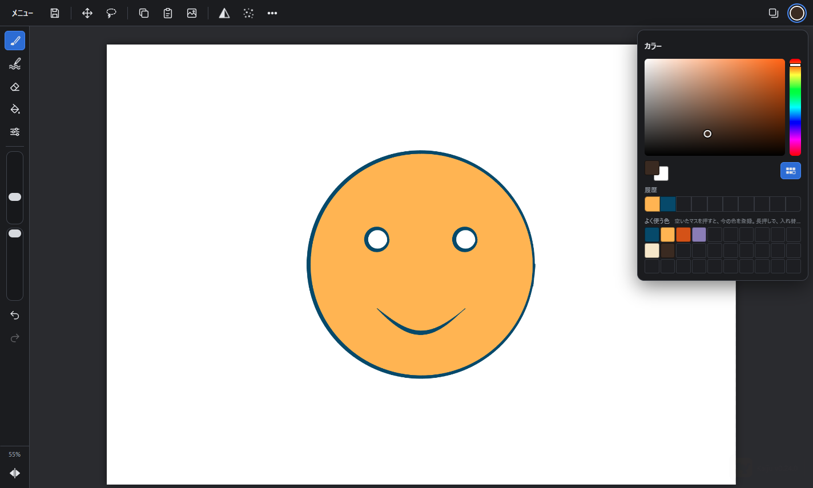
絵の中の色を拾うには、ブラシを長押ししてスポイトにします。
画面の色(RGB)には、印刷(CMYK のインク)では出せない、あざやかな色があります。そのほかの機能 → 仮想 CMYKを押すと、印刷したときの色に近づけて表示します(あざやかな緑・青・赤が、少しにぶく見えます)。
トップバーのボタン(色相・彩度・明るさは、サイドバーのボタン)で行います。
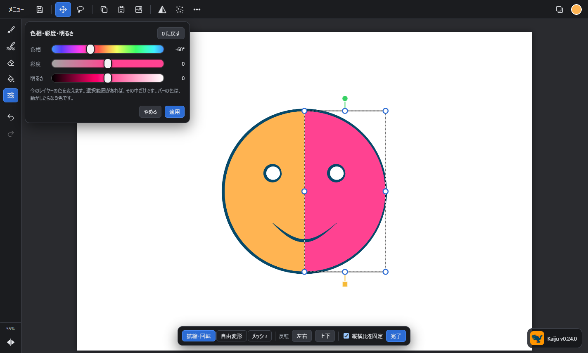
囲んだ中に絵があるときは、離すと、そのまま移動・変形になります(枠とハンドルが出ます。下の「移動と変形」)。囲んだ中だけに塗りたいときは、そのあとブラシを選びます(選択範囲は残ります)。そのまま移動・変形にしたくないときは、設定の「囲み終わったら、そのまま移動・変形にする」のチェックを外します。
選択範囲があるあいだは、次のことがその中だけに効きます。
| すること | どうなるか |
|---|---|
| ブラシ・消しゴム・バケツ | 枠の外にははみ出しません |
| 移動・変形 | 枠の中の絵だけが、動く・大きさが変わる・回ります(枠もついていきます) |
| コピー | 枠の中の絵だけをコピーします |
| 色相・彩度・明るさ、シャープ、ノイズ | 枠の中だけが変わります |
| 消去 | 枠の中だけ消えます |
トップバーの移動・変形を選ぶと、今のレイヤーの絵(選択範囲があれば、その中の絵)のまわりに、枠が出ます。
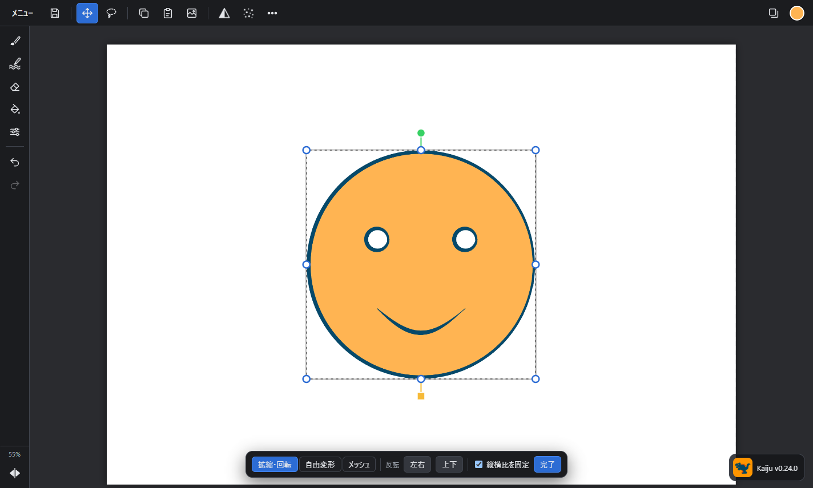
| やりたいこと | 操作 |
|---|---|
| 動かす | 枠の中(ハンドル以外の所)を持って動かします。Shift を押していると、縦か横だけに動きます |
| 大きさを変える | 角の丸を持って動かします。縦横の比はそのままです(下の帯の「縦横比を固定」を外すか、Shift を押していると、比を変えられます)。反対側の角は動きません |
| 縦か横だけ伸ばす | 辺のまん中の丸を持って動かします |
| 回す | 枠の上の緑の丸、または下の黄色の四角を持って、回します。Shift を押していると、15° ずつ回ります |
移動・変形のあいだ、画面の下に帯が出ます。
| 帯のボタン | 意味 |
|---|---|
| 拡縮・回転 | 上の表の、動かす・大きさを変える・回す |
| 自由変形 | 4つの角を、1つずつ好きな所へ動かせます(台形・ななめ・遠近のような形)。角以外の所を持つと、全体が動きます |
| メッシュ | 4×4 の点が出ます。点を1つずつ動かして、絵を曲げます(なめらかに曲がります) |
| 反転 左右 / 上下 | 枠の中の絵を、その場で反転します |
| 縦横比を固定 | 角を持って大きさを変えるときに、縦と横の比を保ちます(はじめはオン) |
| 完了 | 選択を解除して、前に使っていた描くツール(ブラシなど)に戻ります |
選択範囲を、ブラシで塗って作れます。
今見えている絵ぜんぶを1枚にまとめて、新しいレイヤーとしていちばん上に足します(用紙の白は入りません)。元のレイヤーはそのまま残ります。足すと、画面の下にメッセージが出ます。
今のレイヤー(選択範囲があれば、その中)の色を変えます。
そのほかの機能 → レベル補正で、今のレイヤー(選択範囲があれば、その中)の明るさの幅を整えます。上のグラフは、明るさの分布です(左 = 暗い、右 = 明るい)。
| バー | 意味 |
|---|---|
| 入力: 黒 | これより暗い所を、まっ黒にします。右へ動かすと、暗い所がしまります |
| 入力: 中間 | 中間の明るさ。大きいほど、全体が明るくなります |
| 入力: 白 | これより明るい所を、まっ白にします。左へ動かすと、明るい所がとびます |
| 出力: 黒・白 | いちばん暗い所・明るい所を、どの明るさにするか(幅をせばめて、うすくする) |
うすい鉛筆の線をくっきりさせるときは、「入力: 白」を左へ、「入力: 黒」を右へ寄せます。適用で確定、やめるで元に戻します。
トップバーのシャープ・ノイズを押すと、ウィンドウが出ます。今のレイヤー(選択範囲があれば、その中)に効きます。
どちらも、バーを動かすとその場で絵が変わります。適用で確定、やめるで元に戻します。
| やりたいこと | 操作 |
|---|---|
| 描く | 1本指、またはペン |
| 画面を動かす・拡大・縮小 | 2本指でなぞる・つまむ |
| 画面を回す | 2本指でひねる。0° の近くまで戻すと、自動でまっすぐ(0°)に戻ります |
| 左右反転して見る | サイドバーのいちばん下の ◀▶ |
| 元に戻す | 2本指でタップ |
| やり直し(1つ進む) | 3本指でタップ |
| 色を拾う | ブラシのボタンを長押し → 絵を押す |
どれも、描くときの目印です。絵には入りません(保存・書き出しには出ません)。
| 目印 | 出し方 |
|---|---|
| グリッド(方眼) | そのほかの機能 → グリッド表示。間隔は、ガイド設定で変えます |
| 定規(上と左。px) | そのほかの機能 → 定規表示 |
| ガイド(水色の線) | 定規を出して、定規から持ってきます(上の定規からは横の線、左の定規からは縦の線) |
サイドバーのいちばん下の ◀▶ を押すと、キャンバスを左右反転して表示します。形のゆがみを確かめるのに使います。
3本の指で、画面を行ったり来たりこすると、今のレイヤーの絵がぜんぶ消えます(選択範囲があれば、その中だけ)。レイヤーそのものは残ります。まちがえたら、元に戻す(2本指のタップ)で戻せます。3本指のタップは、今までどおり、やり直しです。
| やりたいこと | 操作 |
|---|---|
| 拡大・縮小 | マウスのホイール(ポインターの位置を中心に) |
| 画面を動かす | Space を押しながらドラッグ、またはホイールボタンでドラッグ |
| 全体を表示 | メニュー → 全体を表示(Ctrl+0) |
| 元に戻す / やり直し | サイドバーの ↶ ↷、または Ctrl+Z / Ctrl+Shift+Z |
トップバーの保存ボタン、またはメニューから行います。
| 項目 | 内容 |
|---|---|
| 保存 | PSD(Photoshop の形式)で保存します。前に保存した(か開いた)ファイルがあるときは、そのファイルに上書きします。新しい絵は、保存の画面を出さずに、保存のフォルダへすぐ保存します(下の「保存のフォルダ」) |
| 名前を付けて保存 | 別の名前で保存します。名前と形式(PSD / Kaiju)を選べます |
| PNG で書き出し | 見えているとおりの絵を、1枚の画像にします(人に渡す・投稿する用) |
| 開く | PSD と、Kaiju の形式(.kaiju)を開きます。開く画面は、まず保存のフォルダを出します(設定で「前に開いた所」にも)。iPad の Safari が名前の後ろに .json を足したもの(「名前.kaiju.json」)や、共有パックの絵も開けます |
iPad(ブラウザ)では、保存した絵は Kaiju フォルダ(iPad の中の、Kaiju のフォルダ)に入ります。
保存した絵は、1つのフォルダにどんどんたまっていきます。
| 形式 | 内容 |
|---|---|
| PSD(はじめ) | Photoshop・クリスタ(CLIP STUDIO PAINT)などで、そのまま開けます。レイヤー・グループ・名前・不透明度・重ね方・表示・マスクをクリップ・アルファロックが残ります |
| Kaiju の形式(.kaiju) | Kaiju だけで開ける形式です |
Windows と iPad の間などで、描いている絵(レイヤーごと)と、設定(ブラシ・バーの並び・色・パレットなど)を受け渡せます。アカウントはいりません。
絵と設定を1つのファイル(共有パック。名前.kaijushare.json)にして、iCloud Drive・OneDrive など、両方の端末から見えるフォルダや、AirDrop で運びます。
送る: メニュー →「共有パックを送る…」(「そのほかの機能」や、レイアウトでバーに置いたボタンからも)
開く: メニュー →「共有パックを開く…」
iPad 版は、1回開けば、次からはネットがなくても起動できます。開いたときに、中身を iPad の中に取っておくためです。
メニュー →**設定…**で開きます。
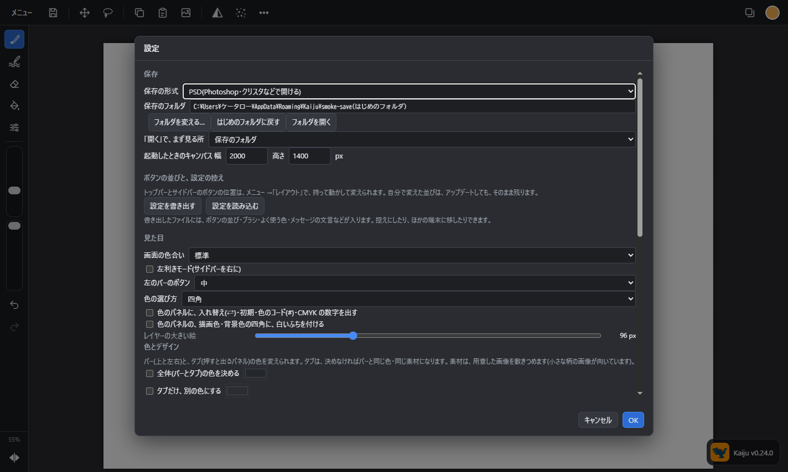
トップバーとサイドバーに並ぶものは、どれも、持って好きな所へ動かせます。トップバーのボタンをサイドバーへ、サイドバーのボタンをトップバーへ移すこともできます。
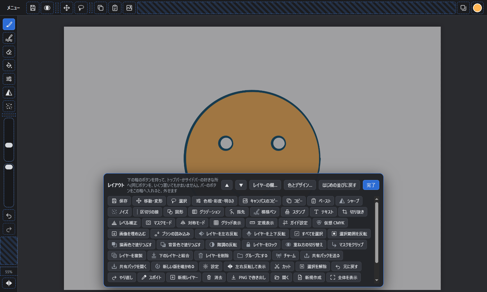
| やりたいこと | やり方 |
|---|---|
| 並べ替える・別のバーへ移す | 持って、置きたい所で離す |
| バーから外す | 持って、下の箱に入れる |
| 置いていないボタンを足す | 下の箱から持ってきて、置く |
| 元に戻す | 箱の「はじめの並びに戻す」 |
自分で変えた並びは、アップデートしても、そのまま残ります。
設定の「ボタンの並びと、設定の控え」にあります。ボタンの並び・ブラシ(作ったもの・読み込んだもの)・よく使う色・メッセージの文言などを、1つのファイルにします。読み込んだ設定は、Kaiju を開き直すと変わります。
メニュー →新規作成で、キャンバスの大きさを決めて、新しい絵を始めます。
色とデザイン(レイアウトの帯の「色とデザイン…」からも開けます)
| 項目 | 意味 |
|---|---|
| 全体(バーとタブ)の色を決める | 上と左右のバーと、押すと出るパネル(タブ)の色。文字やボタンの色は、読めるように自動で決まります(明るい色なら、暗い文字) |
| タブだけ、別の色にする | チェックを入れなければ、タブはバーと同じ色です |
| キャンバスのまわりの色を決める | キャンバスの外の、暗い所の色 |
| 素材(バー)/ 素材(タブだけ) | 用意した画像を、敷きつめます(ダンボール柄・チェック柄など。小さな柄の画像が向いています)。タブは、決めなければバーと同じ素材です |
| バーの形 | サイズと不透明度のバー。角丸のつまみ(はじめ)か、串団子(細い棒に、丸い玉) |
| チャーム(つまみの絵) | つまみ(玉)の代わりに、選んだ絵を出します。まわりが透明な PNG が向いています |
「ペーストしました」「保存しました」など、何かしたときに画面の下に出るメッセージの文言を、好きに変えられます。
設定は、この端末に覚えています。
Photoshop に合わせてあります。Mac では、Ctrl の代わりに ⌘ を使います。
| キー | 動き |
|---|---|
| B / E | ブラシ / 消しゴム |
| G | バケツ ⇄ グラデーション(押すたびに交代) |
| S | スタンプ |
| M / L | 選択: 四角で囲む / なぞって囲む |
| V(Ctrl+T) | 移動・変形 |
| I | スポイト |
| T / U / C | テキスト / 図形 / 切り抜き |
| H / Z | 手のひら / ズーム |
| Q | マスクモード(入る / 出る) |
| Alt(ブラシ中) | 押している間スポイト |
| Alt+クリック(スタンプ中) | コピー元を選び直す |
| Space+ドラッグ | 画面を動かす |
| Enter(切り抜き中) | 切り抜く |
| キー | 動き |
|---|---|
| [ / ] | ブラシを小さく / 大きく |
| Shift+[ / Shift+] | ブラシをやわらかく / 硬く(25% ずつ) |
| 1〜9、0 | ブラシの不透明度 10%〜90%、100% |
| Shift+1〜9、0 | ブラシの流量 10%〜90%、100% |
| Shift+クリック | 前の線の終わりから直線 |
| X / D | 描画色と背景色を入れ替え / 黒と白に戻す |
| Alt+Backspace(Shift+F5) | 描画色で塗りつぶす(今のレイヤー。選択範囲があれば、その中) |
| Ctrl+Backspace | 背景色で塗りつぶす |
| キー | 動き |
|---|---|
| Ctrl+Z / Ctrl+Shift+Z | 元に戻す / やり直し(Ctrl+Alt+Z も、元に戻す) |
| Ctrl+C / Ctrl+X / Ctrl+V | コピー / カット / ペースト |
| Ctrl+A / Ctrl+D(Esc) | すべてを選択 / 選択を解除 |
| Ctrl+Shift+I | 選択範囲を反転 |
| Delete(Backspace) | レイヤーの中身(選択範囲があれば、その中)を消去 |
| キー | 動き |
|---|---|
| Ctrl+Shift+N / Ctrl+J | 新規レイヤー / 複製 |
| Ctrl+E | 下のレイヤーと結合 |
| Ctrl+Alt+Shift+E | キャンバスのコピー(見えている絵を、1枚の新しいレイヤーに) |
| Ctrl+G / Ctrl+Shift+G | グループにする / グループを解除 |
| Ctrl+Alt+G | マスクをクリップ(付ける / 外す) |
| Ctrl+] / Ctrl+[ | レイヤーを上へ / 下へ |
| Alt+] / Alt+[ | 上の / 下のレイヤーを選ぶ |
| Ctrl+/ | レイヤーをロック / 解除 |
| / | アルファロック(透明な所に描けなくする)/ 解除 |
| キー | 動き |
|---|---|
| Ctrl+U | 色相・彩度・明るさ |
| Ctrl+L | レベル補正 |
| Ctrl+I | 階調の反転(色を、反対の色に) |
| キー | 動き |
|---|---|
| Ctrl+0 / Ctrl+1 | 全体を表示 / 100% |
| Ctrl++ / Ctrl+- | 拡大 / 縮小 |
| Ctrl+R | 定規 |
| Ctrl+' (日本語キーボードは Ctrl+@) | グリッド |
| Ctrl+: | ガイドを見せる / 隠す |
| Ctrl+Y | 仮想 CMYK(色の校正) |
| F5 / F6 / F7 | ブラシ / カラー / レイヤー のウィンドウ |
| キー | 動き |
|---|---|
| Ctrl+N / Ctrl+O | 新規作成 / 開く |
| Ctrl+S / Ctrl+Shift+S | 保存(PSD)/ 名前を付けて保存 |
| Ctrl+Alt+Shift+W | PNG で書き出し |
| Ctrl+K | 設定 |
Photoshop とちがう所: 画面の回転(R)・ペン(P)・覆い焼き(O)など、Kaiju にないツールのキーは、何も起きません。Ctrl+Shift+E(表示レイヤーを結合)は、ありません(1枚にまとめたレイヤーを足す Ctrl+Alt+Shift+E を使ってください)。
| こまったこと | たしかめること |
|---|---|
| 描けない | レイヤーが非表示(○)になっていないか。グループを選んでいないか(グループには描けません。中のレイヤーを選びます) |
| 指で描けない | メニューの「指で描く」がオフになっていないか |
| 描いても色が乗らない所がある | 選択範囲(点線の枠)が残っていないか。ブラシのパネルの「線との隙間」が 0 以外になっていないか |
| ポインターがスポイトの形のまま | ブラシのボタンをもう一度押すと、ブラシに戻ります |
| 小窓がじゃま | 上の帯の × で閉じます。ウィンドウを長押しすると、元(外を押すと閉じる形)に戻ります |
| バケツの色が外までもれる | バケツの設定の「隙間閉じ」を大きくします |
| バケツで細い所が塗り残される | 「隙間閉じ」を小さくします |
| 線のきわに白い所が残る | 「線へのはみ出し」を大きくします |
| 画面がななめのまま戻らない | メニュー →「角度を戻す」 |
| 描けない(「ロックされています」と出る) | レイヤーのパネルの「ロック」を、もう一度押して解除します |
| 塗った所が赤くなる・絵に描けない | マスクモードになっています。そのほかの機能 → マスクモード(Q)で出ます |
| 色がにぶく見える | 仮想 CMYK がオンになっています。そのほかの機能 → 仮想 CMYK で戻ります |
| 反対側にも線が出る | 対称モードがオンになっています。そのほかの機能 → 対称モードを、「なし」になるまで押します |
| 絵が左右逆に見える | サイドバーのいちばん下の ◀▶ が、白くなっていないか(押すと、元の向きに戻ります) |
| 移動で「動かす絵がありません」と出る | 今のレイヤー(選択範囲があれば、その中)に絵がありません。絵のあるレイヤーを選びます |
| 新しいレイヤーに、勝手にクリップの矢印が付く | クリップしているレイヤーの間に作ったためです。いらなければ「マスクをクリップ」のチェックを外します |
| 保存したファイルを、ほかのソフトで開きたい | そのまま PSD で保存されています。Kaiju の形式にしたいときは、設定 →「保存の形式」 |
| サイドバーにサイズのバーが出ない | ブラシか消しゴムを選んでいるときだけ、サイズと不透明度が出ます |
| 絵が小さい・大きいまま | サイドバーのいちばん下の % を押すと、全体を表示します |
| アップデートしたら、ボタンの並びが変わった | 並びを変えていない人は、新しい版のはじめの並びになります。自分で並びを変えておけば、次からは変わりません |
| iPad で、並びやブラシが消えた | Safari が、長く開かなかった設定を消したためです。ホーム画面に追加して使うと、消されにくくなります。設定 →「設定を書き出す」で控えを取っておけます |
| ボタンをなくしてしまった | メニュー → レイアウト →「はじめの並びに戻す」 |
| iPad で、新しい版にならない | メニュー →「新しい版を確かめる(更新)」を押します |
| 大きいキャンバスで、描くのが遅い | 0.21.0・0.21.1 で、描いている間の表示を軽くしました(縮めて見せているときは、描いている間だけ、少し粗く見えます。止まると、なめらかに戻ります)。それでも遅いときは、レイヤーの数を減らす(結合する)か、手ぶれ補正の強さ(設定 → 操作)を下げてみてください |
| iPad で、ネットがないと開けない | ネットにつながっている状態で1回開いて、「オフラインでも使えるようになりました」が出るのを待ちます。ホーム画面に追加したものは、追加したあとにも1回開いておきます |
| ブラシの設定をおかしくしてしまった | ブラシのパネル → このブラシの設定 →「初期設定に戻す」 |
Claude(Claude Code)に、Kaiju で絵を描いてもらえます。下描き → 線画 → 色塗り → 影と光 → 保存 まで、Claude が自分で線と面を置いていきます(画像を作る AI ではなく、ブラシ・バケツ・形で描きます)。
使い方
はじめに1回だけ、Claude に Kaiju を登録します(Claude Code で、次の1行を実行します。フォルダの場所がちがうときは、合わせてください)。
claude mcp add --scope user kaiju -e ELECTRON_RUN_AS_NODE=1 -- "C:\Users\ケータロー\Desktop\Kaiju\node_modules\electron\dist\electron.exe" "C:\Users\ケータロー\Desktop\Kaiju\lib\mcp-bridge.js"
Claude に、「Kaiju で、りんごの絵を描いて」のように頼みます。Kaiju が閉じていれば、自動で開きます。
Claude が描いている間、Kaiju の画面で、絵ができていくのが見えます。レイヤーは「下描き」「線画」「色」「影」のように分かれるので、あとから自分で手直しできます。
Claude ができること
| すること | 中身 |
|---|---|
| 見る | 今の絵を画像で見る(全体・一部の拡大・レイヤー1枚だけ・座標の目盛りつき) |
| レイヤー | 足す・選ぶ・名前・不透明度・重ね方・マスクをクリップ・アルファロック・表示・削除・複製・結合・消去・上下 |
| ブラシで描く | ブラシ・色・太さ・不透明度を選んで、線を引く(入り抜きつき)。消しゴムも |
| バケツで塗る | 線で囲んだ中を塗る(隙間閉じ・線へのはみ出しも使えます)。何か所も、まとめて塗れます |
| 形で塗る | 多角形・なめらかな形・楕円・四角・パスを、塗り・線・ぼかしつきで描く(影や光に) |
| 左右対称 | 線・形・バケツを、縦の線で映して、左右に同じように描く(正面を向いた人や顔に) |
| 選択範囲 | 形で囲む・同じ色の所を選ぶ(自動選択)・レイヤーの絵のある所を選ぶ。足す・引く・反転・ふちをぼかす。選んだ所にだけ描けます |
| 動かす・変形 | レイヤーの絵(選択範囲があれば、その中だけ)を、動かす・大きさを変える・回す・反転する |
| 色の調整 | 色相・彩度・明るさを変える(色違いを作る) |
| 元に戻す | Claude が描いたものも、1つずつ元に戻せます(自分で、2本指タップや Ctrl+Z でも) |
| 画像を置く | 画像のファイルを、新しいレイヤーとして置く(資料・下絵) |
| 保存 | PSD で保存、PNG で書き出し(背景なし・絵の大きさに切りつめる・縮める もできるので、ゲームの素材にそのまま使えます) |